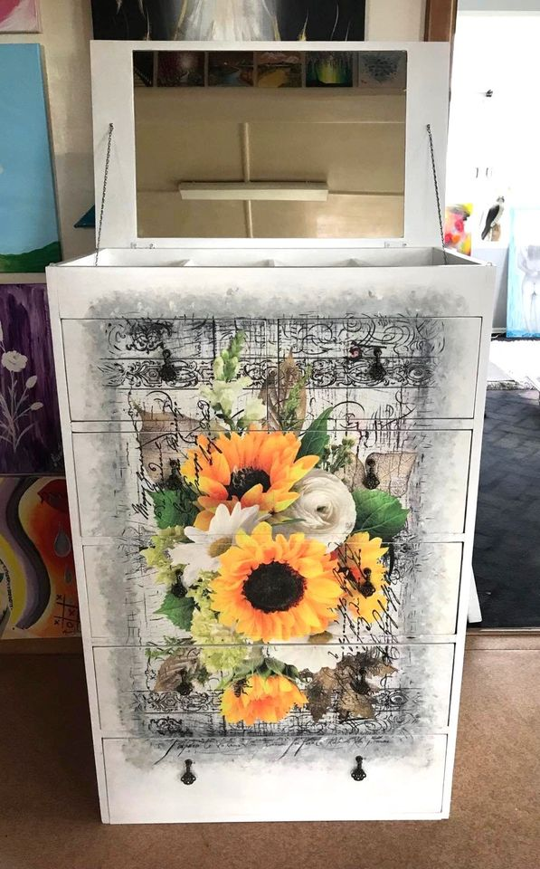
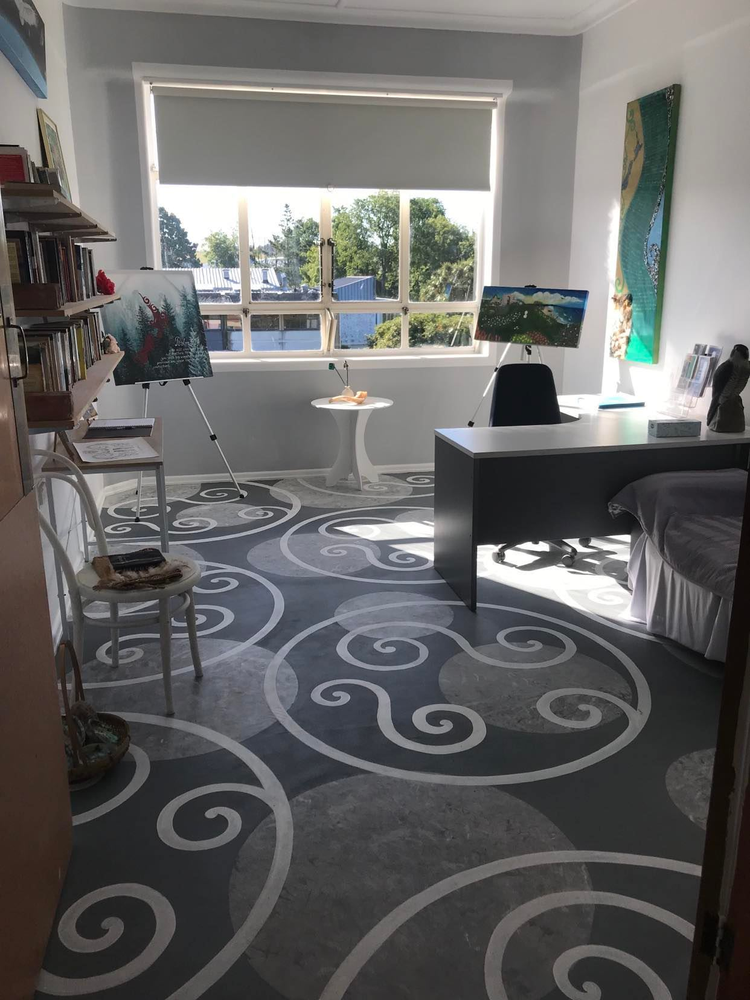
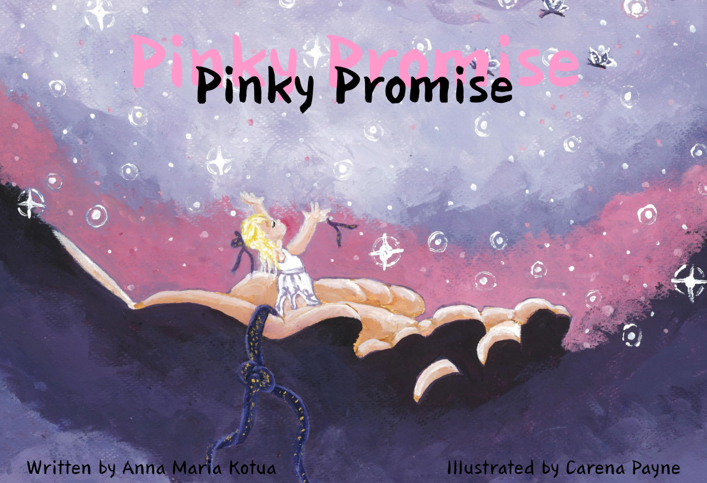

Creative Practice & Special Projects
Creative work across art, craft, restoration, writing and practical projects beyond architecture and study.
Creative Collections
Browse the collections below to explore different areas of creative practice. New photographs, process work and completed projects can be added to each collection over time.

Architectural Drawing & Visual Representation
Architectural sketches, perspective studies, building details, architectural paintings and other ways of communicating spatial ideas.
View collection
Fine Art & Observational Studies
Still life, landscapes, animals, waterfalls, sunsets, beaches and flowers in acrylic, oil, watercolour, texture and mixed media.
View collection
Photography & Digital Image-Making
Photography, edited images, digital artwork and visual documentation exploring ideas, places, materials and atmosphere.
View collection
Sculpture, Ceramics & Material Exploration
3D-printed forms, pottery, ceramic characters and functional clay pieces exploring form, texture and making.
View collection
Timber, Resin & Functional Object Design
Resin artworks, functional resin objects and reclaimed timber pieces developed through layered surfaces and practical reuse.
View collection
Metalwork & Practical Fabrication
Steel artwork, grinder-finished surfaces, custom brackets, building components and practical engineering solutions.
View collection
Textiles, Fibre & Upholstery
Printed textile wall hangings, soft furnishings and the repair and reupholstery of seating.
View collection
Furniture Restoration & Surface Design
Restored tables and duchesses, furniture repair, painted finishes, transfers, decoupage, wall murals and decorated work surfaces.
View collection
Renovation, Construction & Adaptive Reuse
Hands-on renovation, painting, basic plumbing, window and door installation, repairs and creative reuse of existing materials.
View collection
Sustainable Living & Productive Landscapes
Gardening, seed raising, hydroponics, a trampoline-frame tunnel house, food growing and preserving, chickens and sheep.
View collection
Writing & Storytelling
Original writing and story development, including Pinky Promise, a privately printed and currently unpublished children’s book.
View collection